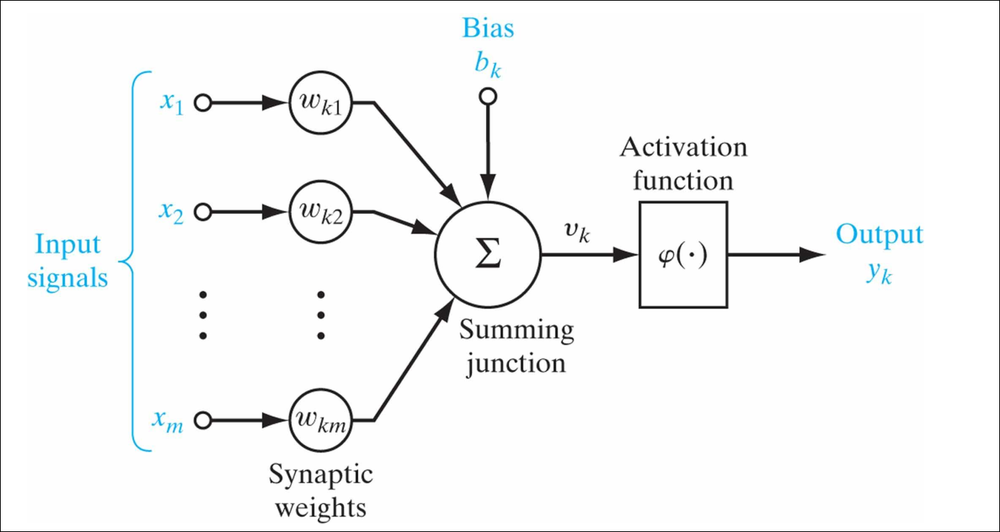
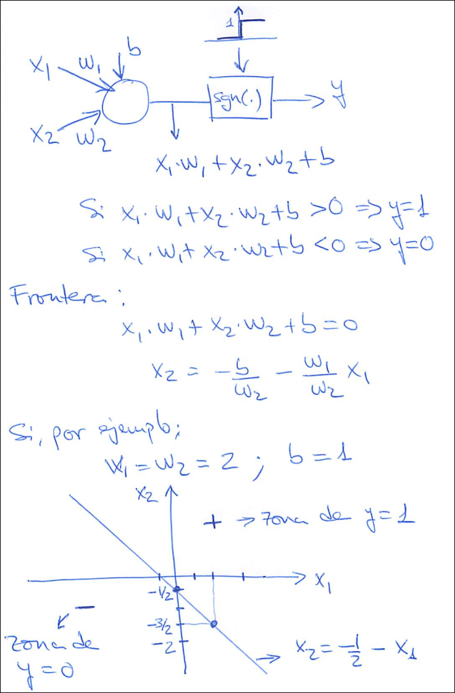
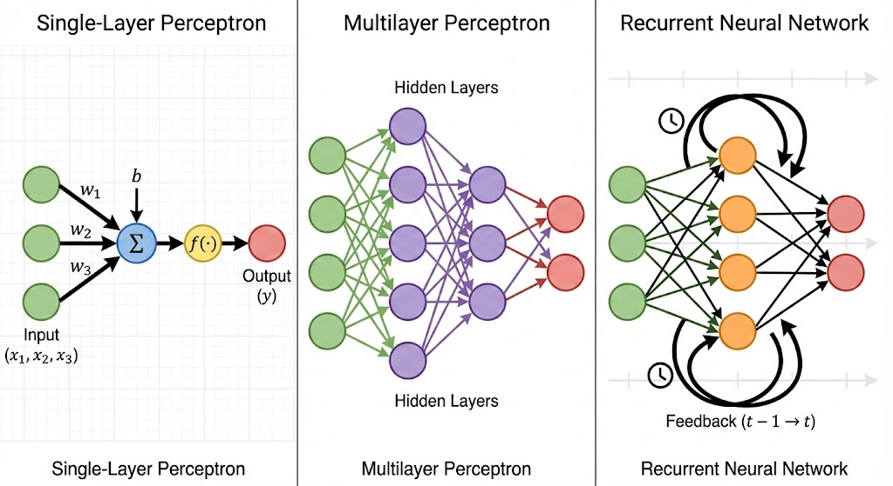
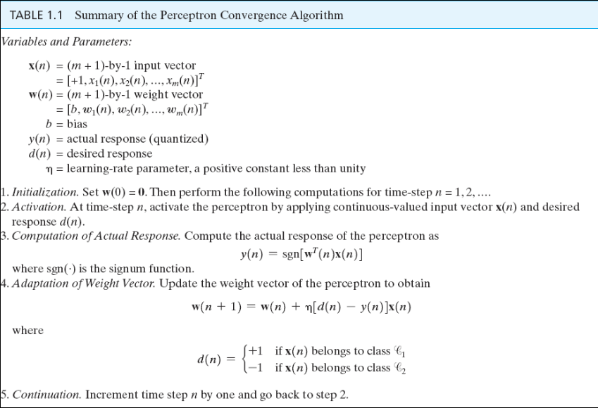
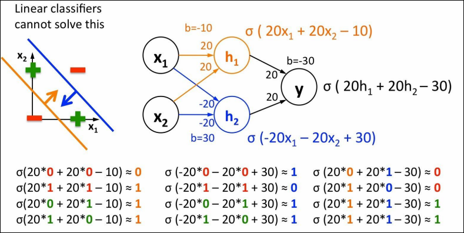

IA · curso 3
4. Sistemas Conexionistas
4.1 Introducción: Del Símbolo a la Neurona
A diferencia de los sistemas expertos (donde un humano programa las reglas), los sistemas conexionistas se inspiran en la estructura física del cerebro para aprender esas reglas a partir de ejemplos.
-
Dualidad: Combinan la Bioinspiración (imitan el cerebro) con la Tecnoinspiración (modelos matemáticos para el cálculo) .
-
Evolución Histórica:
- 1943: Modelo de McCulloch & Pitts (lógica binaria).
- 1957: El Perceptrón de Rosenblatt (primera regla de aprendizaje).
- 1969: Minsky y Papert demuestran las limitaciones (problema XOR), provocando un "invierno de la IA".
- 1986: Renacer con el algoritmo de Retropropagación (Backpropagation) para redes multicapa 2.
4.2 La Neurona Artificial: Unidad Básica
Al igual que en biología, la neurona es la unidad de procesamiento. Existe una analogía directa entre las partes biológicas y el modelo matemático:
| Biología | Modelo Matemático (Artificial) | Función |
|---|---|---|
| Dendritas | Entradas ( |
Reciben señales de otras neuronas o del exterior. |
| Sinapsis | Pesos ( |
Determinan la importancia/fuerza de cada entrada. |
| Soma | Función de suma ( |
Agrega todas las señales ponderadas. |
| Axón | Salida ( |
Transmite el resultado si se supera un umbral. |
Modelo Matemático
Una neurona calcula una suma ponderada de sus entradas más un sesgo (bias), y pasa el resultado por una función de activación.
: Señales de entrada. : Pesos sinápticos (el "conocimiento" de la red se almacena aquí). (Bias): Umbral de activación (matemáticamente equivale a un peso extra con entrada fija ).
Funciones de Activación (
Determinan la salida final de la neurona:
- Escalón (Binaria): Salida 1 si supera el umbral, 0 si no. (Modelo original). Es una decisión rígida.
- Lineal Rectificada (ReLU): Si
sale 0; si sale ( ). Actúa como un filtro de "pase". Si la señal es relevante (positiva), la deja pasar tal cual; si es irrelevante (negativa), la anula por completo. - Sigmoidal: Transforma la salida en un valor suave entre 0 y 1 (probabilidad). Fórmula:
. En lugar de decir "Es un gato" (1) o "No es un gato" (0), la neurona dice "Hay un 85% de probabilidad de que sea un gato" (0.85).
Danger
Cuidado con la terminología, en función de la función de activación que se use, cambia el nombre de la neurona.
|Nombre|Función de Activación (f(z))|Salida|Interpretación|
|---|---|---|---|
|Regresor Lineal|Identidad (Ninguna)
"La casa vale 250.000€"|
|Regresor Logístico|Sigmoide
"Hay un 85% de probabilidad de que sea spam"|
|Perceptrón|Escalón (Step)
"Es spam (1). Punto."|
Se aplican al final del procesamiento de la neurona, justo después de calcular la suma ponderada y antes de enviar la señal a la siguiente capa.
El proceso paso a paso es:
- Recepción: La neurona recibe las entradas (
) multiplicadas por sus pesos ( ). - Suma (
): Se suman todos estos valores más el sesgo ( ). Esto ocurre en la "unión sumadora" ( ). - Activación (
): Aquí es donde se aplica la función. El valor entra en la "caja" de la función de activación y se transforma en la salida final .

4.3 Análisis Geométrico: ¿Qué "ve" una neurona?
Una sola neurona funciona como un clasificador lineal.
- Frontera de decisión: La neurona divide el espacio en dos zonas (ej. Clase A y Clase B).
- Matemáticamente, esta frontera es una recta (o hiperplano) definida por:
- Interpretación:
- A un lado de la recta, la suma es positiva
La neurona se activa ( ). - Al otro lado, la suma es negativa
La neurona se apaga ( ).
- A un lado de la recta, la suma es positiva
Nota de estudio: Los pesos
definen la inclinación de la recta y el bias define su desplazamiento respecto al origen.

En la parte superior ves escritas las "instrucciones" o la configuración de esta neurona específica:
: El peso de la entrada 1. : El peso de la entrada 2. : El bias (sesgo).
La neurona calcula una suma:
La frontera (la línea dibujada) es el punto exacto donde esa suma da 0. Es el límite entre dispararse o no. Si sustituimos los valores en la fórmula:
Para poder dibujarla en un gráfico de ejes
- Pasamos el resto al otro lado:
- Dividimos todo por 2:
¡Mira la esquina inferior derecha de la imagen! Ahí está escrita exactamente esa fórmula final:
Aquí es donde ves el efecto del bias.
- Si el bias fuera 0: La línea pasaría exactamente por el cruce de los ejes (el origen).
- Como el bias es 1: La ecuación nos dice que la línea corta el eje vertical en
(o -0.5). - Visualmente: Puedes ver en el dibujo que la línea diagonal no pasa por el centro, sino que está desplazada hacia abajo y a la izquierda. Ese desplazamiento es culpa del bias.
La línea divide el papel en dos territorios:
-
Zona
zona de : Es todo el espacio que queda arriba y a la derecha de la línea. Cualquier punto que caiga aquí (por ejemplo, el punto ) hará que la suma sea positiva ( ). - Interpretación: La neurona se activa (dispara un 1).
-
Zona
zona de :
Es el espacio que queda abajo y a la izquierda (marcado con una flecha y un signo menos). Cualquier punto aquí (por ejemplo,) hará que la suma sea negativa ( ). - Interpretación: La neurona se inhibe (se queda en 0).
4.4 Arquitecturas de Red: ¿Cómo organizamos las neuronas?
No basta con tener neuronas; la clave es cómo las conectamos entre sí. Dependiendo de las conexiones, la red sirve para cosas muy distintas.
4.4.1 Redes Monocapa (Perceptrón Simple)
Es la forma más básica.
- Estructura: Tienes una capa de entradas y una capa de salida. Las entradas se conectan directamente a las salidas.
- Flujo: La información va en un solo sentido (hacia adelante).
- Limitación: Como vimos en el apartado 4.6, estas redes solo pueden resolver problemas lineales. Si los datos no se pueden separar con una línea recta (como el problema XOR), esta red falla.
- Matemáticamente: Es simplemente
.
4.4.2 Redes Multicapa (Feedforward)
Aquí es donde la IA se pone interesante.
- Estructura: Entre la entrada y la salida, metemos capas intermedias llamadas Capas Ocultas.
- ¿Por qué "Ocultas"? Se llaman así no porque "no se vean en el diseño" (eso es falso), sino porque no tienen conexión directa con el mundo exterior (ni con los datos de entrada brutos ni con la respuesta final).
- Función: Rompen la linealidad.
- La primera capa detecta patrones simples (bordes).
- La capa oculta combina esos patrones simples para crear formas complejas (curvas, esquinas).
- Esto permite resolver problemas no lineales (como el XOR, explicado al final).
4.4.3. Redes Recurrentes (ej. Redes de Hopfield)
- Estructura: Tienes bucles. La salida de una neurona puede volver hacia atrás y conectarse a la entrada de sí misma o de otras neuronas anteriores.
- Superpoder: La Memoria. Al tener bucles, la información "da vueltas" y persiste en el tiempo.
- Uso: Son vitales para datos secuenciales (texto, audio, series temporales) porque la red recuerda lo que pasó en el instante anterior.

4.5 El Aprendizaje (Algoritmo del Perceptrón)
¿Cómo aprende la red? Ajustando sus pesos (
Acordase de que perceptrón -> neurona artificial
Algoritmo de Convergencia del Perceptrón:
- Inicialización: Poner los pesos a 0.
- Activación: Presentar un ejemplo
y calcular la respuesta real . - Adaptación de Pesos (Regla de aprendizaje):
: Peso actual. : Tasa de aprendizaje (cuánto cambiamos el peso en cada paso). : Salida deseada (correcta). : Salida obtenida (real).
Lógica del algoritmo:
- Si la red acierta (
), el término es 0 No se cambian los pesos. - Si falla, los pesos se ajustan en la dirección del error para corregirlo la próxima vez.
: debe ser muy pequeño para no provocar cambios significativos en cada iteración, pero no tanto como para evitar o realentizar la convergencia.

4.6 Limitaciones y Soluciones: El Problema XOR
Problemas Linealmente Separables
Limitación del Perceptrón Simple: Solo puede clasificar conjuntos linealmente separables (aquellos que se pueden separar con una sola línea recta). Son los problemas "fáciles" para una neurona.
-
¿Por qué son lineales? Porque una sola neurona (Perceptrón Simple) funciona matemáticamente dibujando una línea recta (como vimos en la imagen anterior:
). -
Ejemplo Clásico (AND y OR):
- Imagínate la función lógica AND (Y). Solo es "verdad" (1) si ambas entradas son 1.
- Si pintas esto en una gráfica, el punto (1,1) es el único "positivo". Los otros tres (0,0), (0,1), (1,0) son "negativos".
- Prueba visual: Puedes dibujar una línea que deje al (1,1) en una esquina y a los otros tres en el otro lado 1.
Problemas No Linealmente Separables (El caso XOR)
Son los problemas "difíciles" donde una sola neurona falla estrepitosamente.
-
¿Por qué son no lineales? Porque la estructura de los datos es compleja. Una sola recta no basta.
-
El Ejemplo Maldito: XOR (O Exclusivo).
- La regla del XOR es: "Es verdad (1) si una es verdadera y la otra falsa. Si son iguales, es falso (0)".
- Puntos Positivos (1): (0,1) y (1,0).
- Puntos Negativos (0): (0,0) y (1,1).
- Prueba visual: Dibuja estos cuatro puntos en un papel. Intenta separar los positivos de los negativos con una sola línea recta. ¡Es imposible! Si separas uno, dejas al otro en el lado equivocado. Siempre te dejas uno fuera .
-
¿Qué pasa si intentas usar un Perceptrón Simple?
- El algoritmo de aprendizaje nunca termina (entra en bucle) o se queda con un error muy alto, moviendo la línea desesperadamente de un lado a otro sin encontrar solución .
¿Cómo se soluciona lo "No Lineal"?
Si una sola línea (una neurona) no puede separar los datos, ¿qué haces? Usas más líneas.
Aquí es donde entran las Redes Neuronales Multicapa:
- Capa Oculta: Usas dos neuronas para dibujar dos rectas distintas. Una recta separa un grupo y la otra recta separa el otro.
- Capa de Salida: Combina la información de esas dos rectas para dar la respuesta final.

Observando la imagen de arriba:
La Parte Izquierda: Aquí vemos el espacio de entrada (
- Signos Menos Rojos (-): Están en
(0,0)y(1,1). Son los casos donde la salida debe ser 0 (Falso). - Cruces Verdes (+): Están en
(0,1)y(1,0). Son los casos donde la salida debe ser 1 (Verdadero).
El Problema: Como ves, es imposible dibujar una sola línea recta que deje a todas las cruces verdes a un lado y a los signos rojos al otro.
La Solución: La imagen muestra dos líneas (una naranja y una azul).
- La línea naranja separa el rojo de abajo
(0,0). - La línea azul separa el rojo de arriba
(1,1). - La zona "válida" (Verde) es la franja que queda entre medias de las dos líneas.
La Parte Derecha: Aquí vemos cómo se construye esa "franja" usando neuronas. Es una red con una capa oculta de dos neuronas (
-
Neurona Naranja (
): - Fíjate en su ecuación:
. - Esta neurona es la responsable de dibujar la línea naranja del gráfico. Se activa si la suma de las entradas es suficiente para superar el primer umbral. Básicamente dice: "¿Estamos por encima de (0,0)?".
- Fíjate en su ecuación:
-
Neurona Azul (
): - Fíjate en su ecuación:
(pesos negativos). - Esta neurona dibuja la línea azul. Se activa si las entradas no son demasiado grandes. Básicamente dice: "¿Estamos por debajo de (1,1)?".
- Fíjate en su ecuación:
-
Neurona de Salida (
): - Recibe las señales de la Naranja y la Azul.
- Su trabajo es hacer una operación AND: Solo se activa si la Naranja dice "SÍ" (estamos encima de la primera línea) Y la Azul dice "SÍ" (estamos debajo de la segunda línea).
4.7 Neurona de BIAS
Matemáticamente, el bias es el término
Para arreglar esto, usamos un truco arquitectónico: Inventamos una "Neurona de Bias".
- Qué es: Es una neurona de entrada extra que añadimos artificialmente a la capa.3
- Su valor: Siempre vale 1. Nunca cambia.
- Su peso: El peso (
) que conecta esta neurona falsa con la siguiente capa es el valor del bias.
Estas neuronas no se cuentan como el resto de neuronas, por si preguntan en el test el número de neuronas de una red.